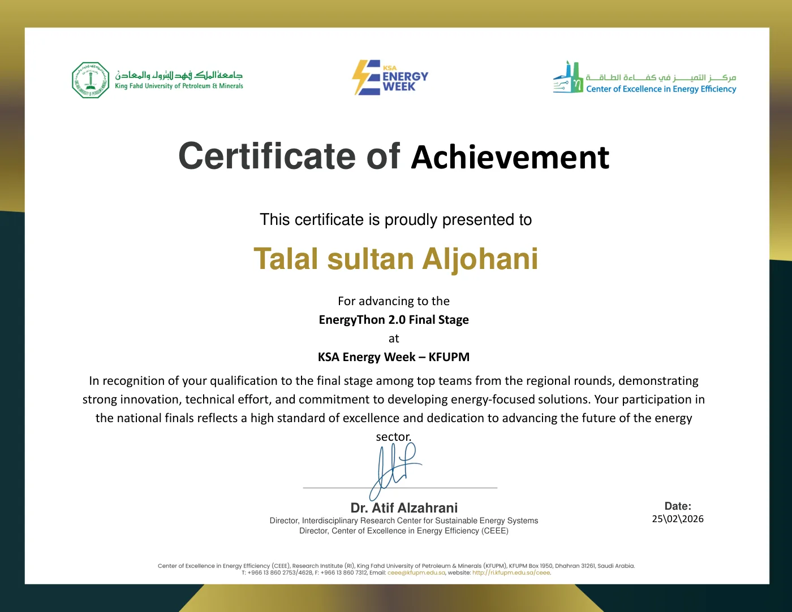
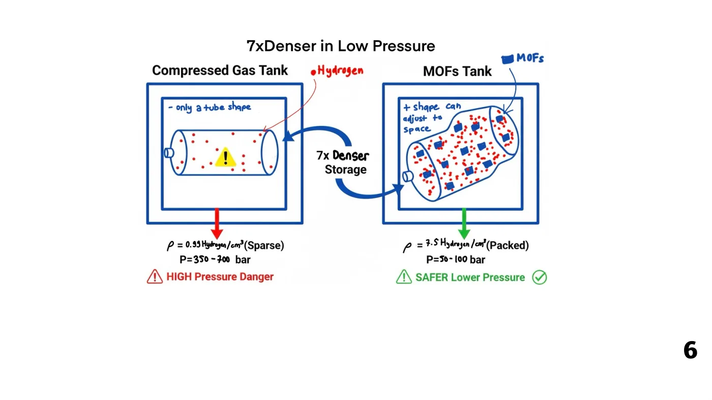
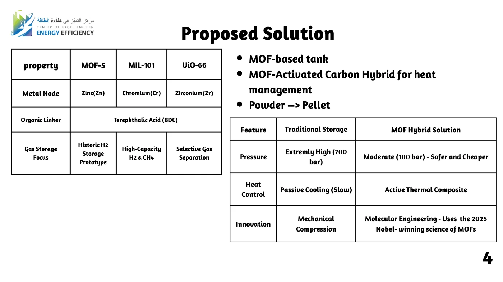

HydroNet
Safer hydrogen storage at 100 bar instead of 700, using metal-organic frameworks. Our entry in the Hydrogen and Clean Fuels track won the Western Region round and reached the national final.تخزين أكثر أماناً للهيدروجين عند 100 بار بدلاً من 700 باستخدام الأطر الفلزية العضوية (MOFs). فازت مشاركتنا في مسار الهيدروجين والوقود النظيف بالمركز الأول في تصفيات المنطقة الغربية، ووصلت إلى النهائي على مستوى المملكة.
The hard part of a hydrogen economy is keeping the fuel, not making it. Hydrogen is the smallest molecule there is: at normal pressure it takes a huge tank, compressing or liquefying it costs up to 30% of its energy, it makes steel tanks brittle, and liquid hydrogen at −253 °C slowly boils off.
التحدّي الأكبر أمام اقتصاد الهيدروجين هو تخزينه لا إنتاجه. فالهيدروجين أصغر جزيء على الإطلاق: يحتاج عند الضغط العادي خزاناً ضخماً، وضغطه أو تسييله يستهلك ما يصل إلى 30% من طاقته، ويجعل الخزانات المعدنية هشّة، والهيدروجين السائل عند −253 °م يتبخّر تدريجياً.
HydroNet stores hydrogen by adsorption instead. A tank filled with a metal-organic framework, the chemistry behind the 2025 Nobel Prize in Chemistry, soaks up hydrogen like a sponge at a moderate 100 bar. We compared three frameworks for the job and paired the MOF with activated carbon to manage the heat released while filling.
يعتمد HydroNet على الامتزاز بدلاً من ذلك: خزان مملوء بإطار فلزي عضوي، وهي الكيمياء التي نالت جائزة نوبل في الكيمياء لعام 2025، يمتصّ الهيدروجين كالإسفنجة عند ضغط معتدل قدره 100 بار. قارنّا ثلاثة أطر مرشّحة، ودمجنا الإطار مع الكربون المنشّط لإدارة الحرارة الناتجة أثناء التعبئة.
The designالتصميم
- A MOF-based tank that works at 100 bar, which is safer and cheaper than 700-bar compressed gas.خزان قائم على الأطر الفلزية العضوية يعمل عند 100 بار، وهو أكثر أماناً وأقل تكلفة من الغاز المضغوط عند 700 بار.
- Three candidate frameworks: MOF-5 (zinc), MIL-101 (chromium) and UiO-66 (zirconium).ثلاثة أطر مرشّحة: MOF-5 (زنك)، وMIL-101 (كروم)، وUiO-66 (زركونيوم).
- A MOF and activated carbon hybrid for active heat management, with the powder pressed into pellets.مزيج من الإطار والكربون المنشّط لإدارة الحرارة، مع كبس المسحوق في حبيبات.
- First market: indoor forklifts and warehouse robots, where high-pressure gas is often restricted by safety codes.السوق الأولى: الرافعات الشوكية وروبوتات المستودعات داخل المباني، حيث تقيّد أنظمة السلامة الغاز عالي الضغط غالباً.
Next stepالخطوة التالية
Battery-like, swappable hydrogen capsules, so refueling becomes swap and go.كبسولات هيدروجين قابلة للاستبدال مثل البطاريات، ليصبح التزوّد بالوقود مجرد استبدال سريع.






